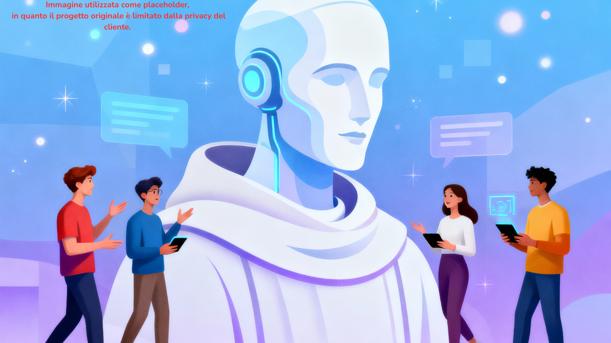
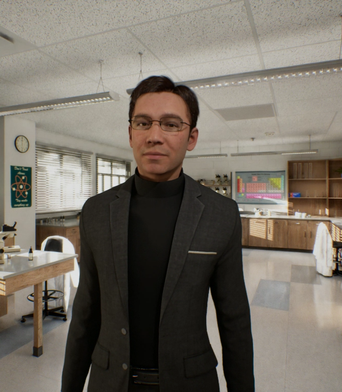
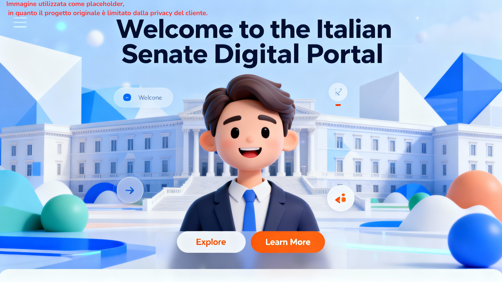

Avatar intelligenti dotati di AI che parlano, ascoltano e interagiscono naturalmente con gli utenti. Porta l'esperienza conversazionale a un nuovo livello.
Sviluppo di avatar realistici con animazioni facciali e labiali sincronizzate, capaci di rispondere in tempo reale alle domande degli utenti.
Collegamento con i migliori modelli di intelligenza artificiale (GPT, Claude, custom models) per conversazioni intelligenti e contestuali.
Design personalizzato dell'aspetto, voce, personalità e stile comunicativo dell'avatar per rispecchiare perfettamente il brand.
Distribuzione su web, app mobile e visori VR per raggiungere l'utenza ovunque si trovi.
Studio approfondito delle esigenze, obiettivi di business e target audience. Definizione delle funzionalità dell'avatar e del tono di voce più adatto al brand.
Creazione del modello 3D dell'avatar, animazioni e integrazione con i sistemi di AI. Personalizzazione della voce e della logica conversazionale.
Test approfonditi dell'avatar in scenari reali, raccolta feedback e ottimizzazione delle risposte AI.
Rilascio dell'avatar, formazione del team e supporto continuativo per aggiornamenti e miglioramenti.
Esempi concreti di avatar AI implementati con successo

Una comunità francescana cercava un'iniziativa digitale per coinvolgere giovani.
Avatar AI conversazionale, integrato con knowledge avanzata sulla storia di San Francesco d'Assisi per rispondere a domande e curiosità.
Realizzato un evento a tema in cui decine di ragazzi hanno interagito con l'avatar.

Avatar sviluppato per un gruppo di studenti di cui facevo parte, avevamo bisogno di un tutor che rispondesse alle nostre domande sulla programmazione.
Avatar tutor personalizzato con capacità di spiegare concetti, rispondere a domande e adattarsi al livello conversazionale.
Abbiamo imparato le nozioni base di HTML e Python in 1 mese di pratica giornaliera, avendo l'avatar come docente virtuale.

La Camera del Senato voleva un'esperienza innovativa per accogliere visitatori nel loro sito e rispondere a delle domande.
Avatar guida 3D, capace di fornire risposte basate sul contenuto del sito.
Prodotto consegnato al portavoce di un senatore che lo aveva richiesto, ricevuto alto indice di gradimento.
Stack tecnologico all'avanguardia per avatar AI performanti
Il tempo varia in base alla complessità del progetto. Un avatar base può richiedere 2-3 settimane, mentre soluzioni più complesse possono richiedere 1-2 mesi. Durante la consulenza iniziale verrà definita una timeline precisa.
Assolutamente sì! Grazie all'integrazione con modelli AI multilingua, gli avatar possono comunicare in decine di lingue diverse, mantenendo naturalezza e comprensione del contesto in ciascuna lingua.
Certamente. Gli avatar sono progettati per essere facilmente aggiornabili. Puoi modificare la knowledge base, aggiungere nuove risposte e migliorare le capacità conversazionali in qualsiasi momento senza dover ricreare l'avatar da zero.
Sì, sviluppo avatar ottimizzati per diverse piattaforme, inclusi smartphone e tablet. La versione mobile può avere alcune ottimizzazioni per garantire il corretto funzionamento della conversazione.
Assolutamente! Durante la fase di sviluppo fornisco demo interattive e prototipi funzionanti per raccogliere feedback e fare modifiche. Il processo è collaborativo per garantire che il risultato finale corrisponda esattamente alle aspettative.
Parliamo del vostro progetto e scopriamo come un avatar intelligente può trasformare l'esperienza utente!